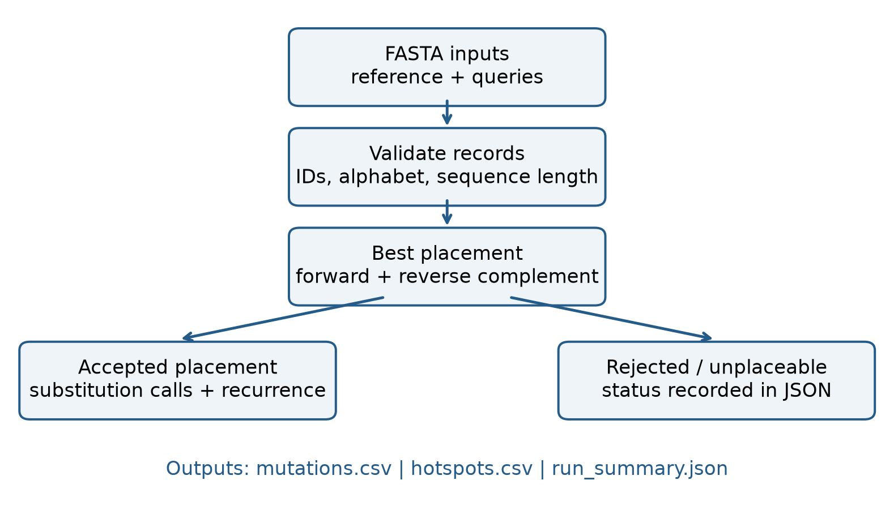

I’m Adam, a biomedical engineering student who works across software, signals and controls—and brings the practical perspective of running a café and working in accounting.
Academic and personal engineering projects, with methods and limitations made explicit.
Closed-loop system schematic · educational simulation
01 / CONTROLS
PID-controlled prosthetic elbow
A C++17 simulation exploring smooth position control under changing loads and imperfect sensor feedback.
C++17CMakePIDControl systems
Modeled the torque-driven joint, filtered potentiometer feedback, actuator saturation and anti-windup. Compared baseline and tuned controllers, with step-response, Bode, Nyquist and root-locus outputs.
Resume-reported nominal benchmark: overshoot 29.3% → 18.9%; settling time 1.38 s → 1.09 s. Load cases span 80–125% of nominal inertia.
Derivative-on-measurement avoids a reference-step derivative kick.
Conditional integration limits integral windup during torque saturation.
Frequency-domain analyses use an idealized linear loop; they are not a full model of the nonlinear, sensor-filtered simulation.
Simulation only—not a clinical device, hardware validation or safety-certified controller.

Reproducible sequence-comparison workflow
02 / BIOINFORMATICS
Viral Variant Atlas
A Python command-line tool that turns FASTA sequences into traceable substitution calls and recurrent-hotspot reports.
PythonFASTACSV / JSONUnit testing
Searches both sequence orientations using an ungapped sliding-window comparison, applies explicit mismatch thresholds and reports one-based reference coordinates. Deterministic tie-breaking keeps results reproducible.
Structured outputs connect each substitution to its query, orientation and placement. Hotspot recurrence counts unique samples rather than simply counting repeated events.
Validates FASTA headers, sequence content and empty records.
Tests coordinate mapping, reverse complements, thresholds, tie-breaking and aggregation.
Demo data is synthetic. This is exploratory analysis, not clinical interpretation.
Ungapped matching does not model insertions or deletions; those require an appropriate aligner.
Resting-state EEG
Signal → entropy features → subject-held-out evaluation
Resume-based project overview. Original code and report are not yet linked.
03 / SIGNALS & MACHINE LEARNING
Age classification from EEG spectral entropy
A MATLAB / EEGLAB project exploring age classification using resting-state EEG features from 50 subjects and 62 channels.
MATLABEEGLABSpectral entropyClassification
Compared a linear SVM and random forest using six features and leave-one-subject-out cross-validation, with scaling restricted to training data.
Resume-reported accuracy: 74% for the linear SVM versus 66% for the random forest.
These details come from the approved resume. Source files have not yet been located; the figures and results are not presented as independently reproduced here.
Beyond the lab
Systems meet real operations.
Customer-facing work and financial discipline shape how I approach technical problems.
Odoo Café
Owner & Co-Founder · October 2022–present
Running day-to-day operations with a 10-person team: supplier coordination, inventory, customer communication and financial planning. Used AI-assisted Python tooling to support the website and administrative workflows.
LBN Consulting
Accounting Intern · August 2025–September 2026
Worked with QuickBooks transactions, receipt organization, expense reconciliation, monthly reporting and bank cash-flow tracking—building an appreciation for clean data and reliable processes.
Let’s connect
Looking for a place to build, learn and contribute.
I’m graduating with a B.Eng. in Biomedical Engineering from Toronto Metropolitan University in May 2027. I’m exploring biomedical and medtech, adjacent technical, and business / operations opportunities in the GTA or remotely within Canada.